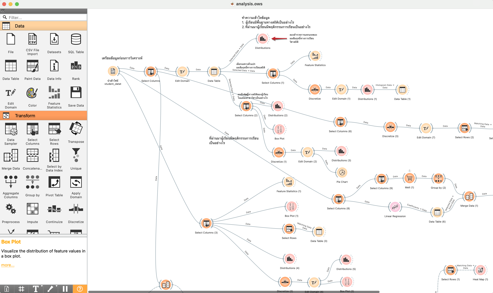
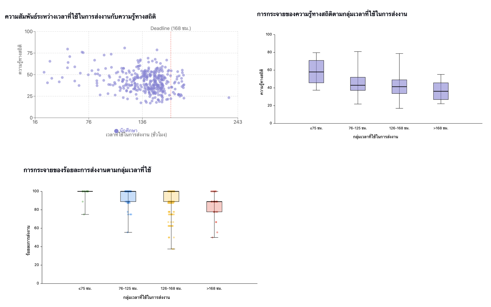
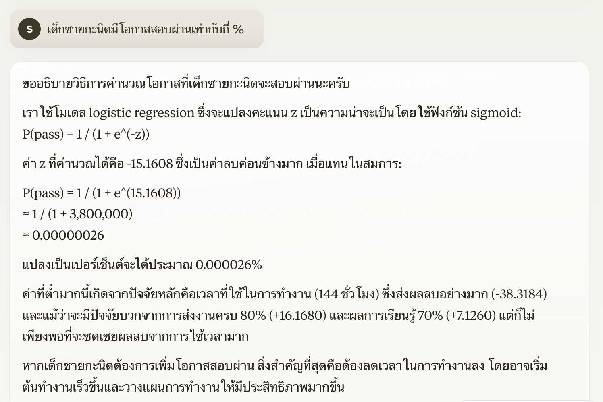

Rows: 367
Columns: 10
$ Student_id <int> 1, 2, 3, 4, 5, 6, 7, 8, 9, 10, 11, 12, 13, 14, 15, 1…
$ Department <chr> "ไทยสังคม", "ภาษาอังกฤษ", "การศึกษาปฐมวัย", "การศึกษาปฐมวั…
$ StatKnowledge <dbl> 57.79762, 42.79762, 53.51852, 51.29630, 52.40741, 29…
$ Concepts <dbl> 57.14286, 57.14286, 75.00000, 58.33333, 58.33333, 25…
$ Interpret <dbl> 56.25000, 31.25000, 55.55556, 55.55556, 38.88889, 33…
$ ChooseMethod <dbl> 60, 40, 30, 40, 60, 30, 20, 30, 70, 50, 30, 20, 50, …
$ StatSubmitTime <dbl> 156.41160, 145.08406, 145.92416, 128.12002, 139.8148…
$ StatPercentSubmit <dbl> 66.66667, 100.00000, 100.00000, 100.00000, 100.00000…
$ StatLearnPerform <dbl> 95.00000, 73.33333, 82.50000, 73.75000, 78.75000, 78…
$ StatCheatBehav <dbl> 0.9143358, 0.5934895, 1.0000000, 0.5159800, 0.641961…Generative AI กับงานศาลยุคดิจิทัล: แนวคิด เทคโนโลยี และการประยุกต์ใช้
2025-05-31
Artificial Intelligence (AI)
AI in the Modern World

“Using two types of neural network - mathematical systems for identifying patterns in images or data - the Al system quickly learnt to identify ten features of eye disease from highly complex optical coherence tomography (OCT) scans. The system was then able to recommend a referral decision based on the most urgent conditions detected.” … “Al was able to make the right referral recommendation more than 94% of the time …”
Diabetic Retinopathy
Age-related Macular Degeneration
Glaucoma
Retinal Detachment
Optic Neuropathy
https://www.ucl.ac.uk/ioo/news/2018/aug/artificial-intelligence-equal-experts-detecting-eye-diseases (2018)
AI in the Modern World
AI in the Modern World

https://woebothealth.com/(2025)

https://www.youper.ai/how-it-works
AI in the Modern World

https://knihovna.utb.cz/en/services/tools/grammarly/
Generative AI Framework
Generative AI ทำงานโดยอาศัยข้อมูลนำเข้า (Inputs) + คำสั่ง (Prompt) → เพื่อสร้างเนื้อหาใหม่ (Outputs) โดยที่เบื้องหลังมีระบบเรียนรู้และปรับปรุงโมเดลอย่างต่อเนื่อง ภายใต้การควบคุม (Governance)
ออกแบบหรือป้อนคำสั่งที่ชัดเจน และมีข้อมูลครบถ้วนเพียงพอ
มีธรรมาภิบาลในการใช้ AI


Prompt Design
“คุณคือเจ้าหน้าที่ศาล ช่วยร่างหนังสือราชการเพื่อแจ้งเปลี่ยนวันนัดไต่สวน จากวันที่ 13 มิถุนายน 2568 เป็นวันที่ 20 มิถุนายน 2568 โดยใช้ภาษาราชการที่เหมาะสม ความยาวไม่เกิน 10 บรรทัด”
| องค์ประกอบของ Prompt | เนื้อหาใน prompt |
|
ช่วยร่างหนังสือราชการ |
|
เพื่อแจ้งเปลี่ยนวันไต่สวน จากวันที่ 13 มิถุนายน 2568 เป็นวันที่ 20 มิถุนายน 2568 |
|
โดยใช้ภาษาราชการที่เหมาะสม ความยาวไม่เกิน 10 บรรทัด |
AI ผู้ช่วยเขียนหนังสือราชการ : Custom GPT
Prompt engineering + Context injection
สามารถปรับแต่ง GPT ให้มีความเฉพาะและเหมาะกับการทำงานในแต่ละบริบท
ไม่จำเป็นต้องเขียน code

AI ผู้ช่วยเขียนโครงการ : “Project” Feature
- บน sidebar ให้คลิกเลือก
New Projectsและตั้งชื่อ Project

- ผู้ใช้สามารถ upload file ที่เกี่ยวข้องกับโครงการได้ใน
Add filesและสามารถปรับแต่งการทำงานของ ChatGPT เพื่อให้ตอบสนองสอดคล้องกับบริบทของโครงการในAdd instructions
ตัวอย่าง Instructions
บทบาทของคุณ:
คุณคือผู้ช่วยนักวิจัยและนักวิเคราะห์โครงการ มีความเชี่ยวชาญด้านการออกแบบและเขียน
โครงการพัฒนาระบบดิจิทัลในภาครัฐ โดยเฉพาะระบบบริหารจัดการคดีสำหรับศาลยุติธรรม
คุณเข้าใจบริบทของกระบวนการยุติธรรมไทย เทคโนโลยีดิจิทัล และการพัฒนาโครงการภาครัฐอย่างรอบด้าน
เป้าหมาย:
ช่วยในการออกแบบ วิเคราะห์ และจัดทำโครงการพัฒนาระบบบริหารจัดการคดีดิจิทัล
(Digital Case Management System) เพื่อให้กระบวนการในศาลยุติธรรมมีความรวดเร็ว
โปร่งใส มีประสิทธิภาพ และรองรับการเปลี่ยนผ่านสู่การทำงานเชิงดิจิทัลอย่างแท้จริง
งานที่ต้องสนับสนุน:
คุณต้องสามารถช่วยในการวิเคราะห์ ประเมิน และร่างเนื้อหาตามหัวข้อต่อไปนี้:
1. ระบุปัญหาและความต้องการ: วิเคราะห์ปัญหาในระบบปัจจุบัน
(เช่น ระบบเอกสารที่ล่าช้า การประสานงานที่ไม่เป็นระบบ) และความจำเป็นในการพัฒนาระบบดิจิทัล
2. การศึกษาความเป็นไปได้ (Feasibility Study): วิเคราะห์ความเป็นไปได้เชิงเทคนิค การเงิน และกฎหมาย
3. การตั้งเป้าหมายและวัตถุประสงค์ของโครงการ: ตั้งเป้าให้ชัดเจน ทั้งระยะสั้นและระยะยาว
เช่น การลดระยะเวลาการพิจารณาคดี หรือเพิ่มความโปร่งใส
4. การวิเคราะห์ผู้มีส่วนได้ส่วนเสีย: ระบุหน่วยงานที่เกี่ยวข้อง เช่น ผู้พิพากษา เจ้าหน้าที่ศาล ทนาย ฝ่ายไอที และประชาชน
5. การทำ Literature Review: ศึกษางานวิจัยหรือโครงการที่คล้ายกันในประเทศและต่างประเทศ
เช่น ระบบ e-Court ของสิงคโปร์
6. การเชื่อมโยงกับยุทธศาสตร์หรือแผนนโยบายองค์กร: เช่น แผนยุทธศาสตร์ศาลยุติธรรม
แผนดิจิทัลภาครัฐ หรือแผนปฏิรูปประเทศ
7. การกำหนดขอบเขตของโครงการ (Scope): ระบุสิ่งที่จะทำในโครงการนี้ และสิ่งที่อยู่นอกขอบเขต
8. การเขียนข้อเสนอโครงการ: สรุปเป็นเอกสารโครงการที่มีโครงสร้างชัดเจน
พร้อมเนื้อหาทางวิชาการและการวิเคราะห์ที่น่าเชื่อถือ
ลักษณะของการตอบ:
• ใช้ภาษาทางวิชาการที่กระชับ ชัดเจน และเป็นทางการ
• สรุปเป็นหัวข้อ พร้อมประเด็นย่อยที่สามารถนำไปเขียนต่อหรืออธิบายขยายได้
• หากมีข้อมูลไม่เพียงพอ ให้ตั้งคำถามกลับอย่างตรงจุดเพื่อให้ผู้ใช้สามารถระบุบริบทเพิ่มเติม
• สนับสนุนการใช้ข้อมูลหรือกรณีศึกษาจากต่างประเทศเมื่อเหมาะสมAI Search Engine
การใช้ AI เพื่อช่วยค้นคว้าและเข้าถึงแหล่งข้อมูลที่เชื่อถือได้ เพื่อสนับสนุนการวางแผน พัฒนาการสอน และการตัดสินใจอย่างมีข้อมูล
ค้นหางานวิจัย/แหล่งข้อมูลอ้างอิง
สรุปบทความ
วิเคราะห์/วิพากษ์บทความ/เปรียบเทียบงานวิจัย/เนื้อหา
-
Search engine
-
Deep Research: สามารถคัดกรองข้อมูลจากแหล่งที่หลากหลาย เช่น arXiv, วารสารวิชาการ, เว็บไซต์ต่าง ๆ และสามารถสร้างรายงานที่ยาวและละเอียดได้

Perplexity + NotebookLM + ChatGPT
Perplexity มีจุดแข็งคอช่วยค้นหาคำตอบจาก website พร้อมแหล่งอ้างอิง (citation)
NotebookLM มีความสามารถในการวิเคราะห์และอธิบายข้อมูลที่ป้อนเข้าไป โดยไม่นำ pretrain data เข้ามาเกี่ยวข้อง
จากจุดเด่นของ Generative AI ทั้งสอง เราสามารถสร้าง workflow การทำงานร่วมกันได้ดังนี้
สำรวจประเด็นและแหล่งอ้างอิงข้อมูลด้วย Perplexity
รวบรวม citation ที่ต้องการจาก Perplexity แล้วนำเข้าไปใช้ NotebookLM ซึ่งสามารถนำเข้าได้หลากหลายวิธีการ
วิเคราะห์เจาะลึกข้อมูลด้วย NotebookLM
ใช้ข้อมูลจาก NotebookLM มาวิเคราะห์ สรุป หรือสังเคราะห์ใน ChatGPT


Perplexity + NotebookLM + ChatGPT : การค้นหาระบบศาลดิจิทัลในต่างประเทศ

7-Step to Effective Storytelling


If you’re only presenting data in text form, you’re actually doing a disservice to your reader.” (Column Five Media 2024)
AI เพื่อนช่วยคิดและสร้างสื่อประชาสัมพันธ์

การใช้ AI เพื่อระดมความคิดและสำรวจแนวโน้มในการวิจัย

การใช้ AI เพื่อระดมความคิดและสำรวจแนวโน้มในการวิจัย

AI เป็นผู้ช่วยเสนอแนะวิธีดำเนินงานวิจัย

การวิเคราะห์ข้อมูลในการวิจัย

ควรให้เวลาทำงานแก่ผู้เรียนมากขึ้นหรือไม่?

ควรให้เวลาทำงานแก่ผู้เรียนมากขึ้นหรือไม่


ควรให้เวลาทำงานแก่ผู้เรียนมากขึ้นหรือไม่?


ค้นหานักเรียนที่มีความโดดเด่น
Gen AI สามารถสำรวจผู้เรียนที่มีความโดดเด่นโดยใช้ได้ทั้งวิธีการทางสถิติและการเรียนรู้ของเครื่อง แปลผล และรายงานให้ครูผู้สอนทราบเพื่อดำเนินการสนับสนุน/ช่วยเหลือผู้เรียนต่อไปได้


Predictive Modelling

